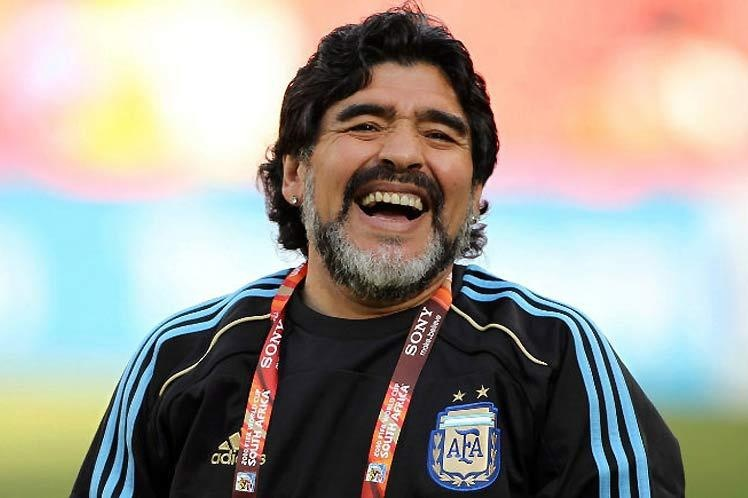

Diego Maradona
Diego Armando Maradona Franco, conhecido mundialmente como Maradona, foi o maior jogador de futebol argentino de todos os tempos e considerado um dos principais futebolistas do mundo.
Durante seus 60 anos de vida, Maradona ficou conhecido pelo brilhantismo e talento no futebol, mas sempre teve a carreira cercada por polêmicas, dentro e fora do gramado. Mesmo com situações que traçaram em sua trajetória um perfil de uma personalidade pública cercada por irreverência, discussões e controvérsias, Maradona é considerado um deus na Argentina e muito querido pelos apaixonados pelo futebol em todo o mundo.